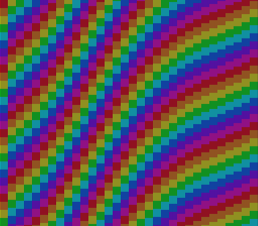
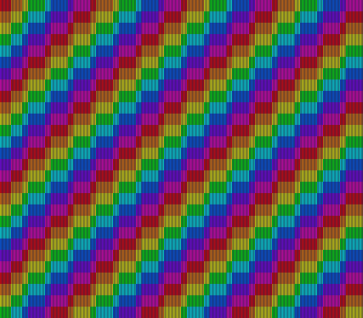

|
OpenSNES
Modern Open-Source SNES Development SDK
|
|
OpenSNES
Modern Open-Source SNES Development SDK
|
Family 2 (Backgrounds) · the offset-per-tile modes (2/4/6), after mode2 and mode4.

The screenshot is luna's native 512×448 output: the stripes are one half-pixel wide.
Mode 6 is the hi-res member of the offset-per-tile family. It gives you one 4bpp (16-colour) BG1 drawn 512 half-pixels wide, like Mode 5, and BG3 as the offset table, read like Mode 2's: one row of horizontal offset words, one row of vertical ones. Its tiles are always 16 half-pixels wide, and so are the table's columns, so 32 words still cover the screen.
BG1 here is diagonal colour bands drawn in one-half-pixel stripes, which no 256-pixel mode can show. A sine wave written into the vertical row makes the columns ripple; press A and the wave moves to the horizontal row, and the columns slide sideways. B shows a still test card for a question the references leave open (below).
Open mode6.sfc in luna (or any SNES emulator) and press A, then B.

luna's native capture after B: every odd column is shifted half a tile.
In a 256-pixel mode the low 3 bits of a horizontal offset are not applied (fullsnes e7b0c5d598767874: "Lower 3bit of HORIZONTAL offsets are ignored"; snesdev-wiki d594aeedde1b87c2: "the fine scroll of 0-7 pixels is retained"), so offsets move whole 8-pixel tiles. In Mode 6 the scroll counts half-pixels and a tile is 16 of them, so bit 3 — the value 8 — falls inside a tile, and no reference says whether it is applied. The card writes 8 into every odd column and 0 into the even ones, nothing else, so the answer is in the picture:
For a game: horizontal offsets that are multiples of 16 look the same everywhere. If you check this example in Mesen2, its wave columns differ from luna's wherever an offset has bit 3 set; neither the example nor the lib is at fault. The corpus note is cartouche-fiches chunk 61be8d9e9e954b38.
testing/manifests/backgrounds_mode6.toml checks the mode, both screens and BG3VOFS, the wave in the vertical row at frame 100, then in the horizontal row after A with the vertical row back to zero (VRAM $6000 and $6040), and that every upload lands in blank. Without the A press it fails. backgrounds_mode6_card.toml checks the card: B at frame 110, then at 140 the wave is frozen and row 0 holds $2000/$2008 alternately with row 1 zero. It pins what the ROM writes, not what the PPU draws.
| Module | Purpose |
|---|---|
| console | System initialization, setMode, WaitForVBlank |
| dma | Palette, tiles, map and the offset rows |
| background | BG1 and BG3 bases, BG3 scroll |
| input | The A button |
| math | fixSin for the wave |
| tile | The 4bpp characters, built from pixels |